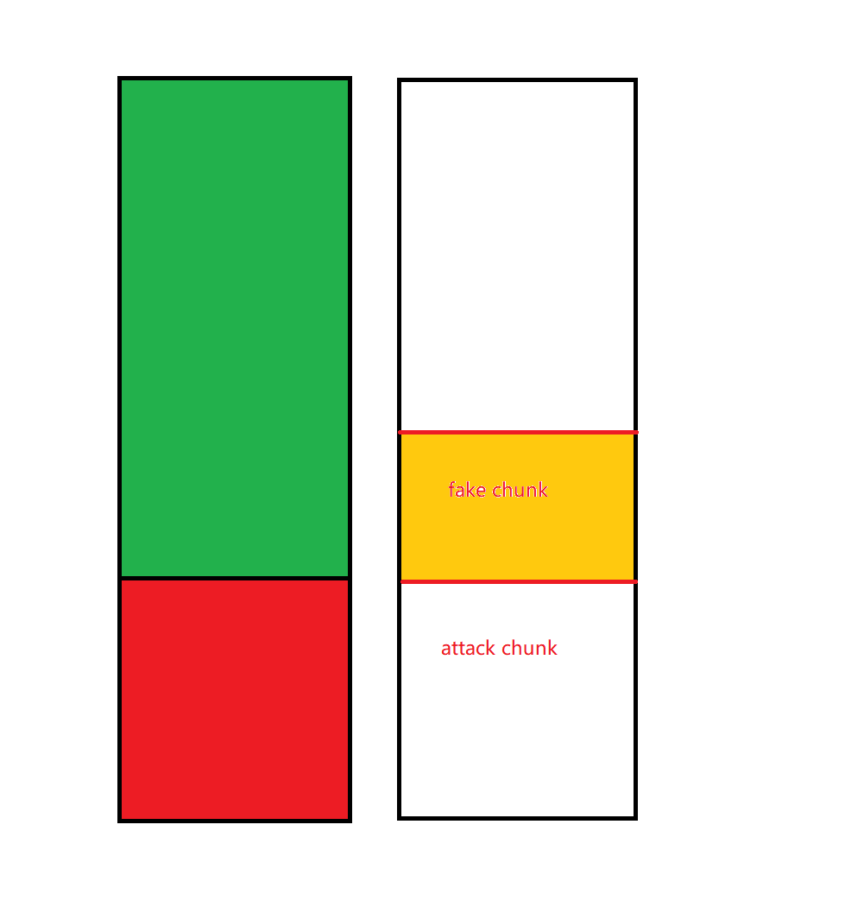

cve-2021-31956 win7 ver
去年年中写过一次，复习了下重新写一下win7版本的打法
区别
简单说下win7上和win10的区别，因为win7的检查策略有所不同，漏洞堆块为系统临时申请，函数调用完后立即释放，在释放时win7会根据blocksize去定位下一个chunk的pool_header,然后验证是否free来进行一个merge操作，因为该漏洞溢出只能溢出一个结构体，前4字节是offset正好对应了poolheader前四个重要成员，不太可控，所以不好好布局的话函数一调用结束就蓝屏
要想不蓝屏，最直接的办法就是布局堆块，让漏洞堆块在页最后，这样直接溢出到下一个页的堆块就不会触发检查从而导致蓝屏。
Quota Process Pointer Overwrite

具体布局如上，红色为漏洞块，直接溢出到下一个页，通过覆盖attack chunk的process pointer处为用户态自己伪造的eprocess地址达成任意地址减一操作，然后注入代码到winlogin中达成提权。
触发任意地址减一需要free attack chunk，这样又会触发一次check，操作系统会检测前一个堆块是否free来进行merge所以这边溢出的时候需要构造一个fake chunk并对应修改attack chunk的prevsize处防止蓝屏
修复
但是上面那种打法会存在一个问题，就是没有修复exp，即使提权了当进程退出时就会蓝屏，为了完美的编写exp，需要尽可能来想办法修复一下。
//具体怎么修复只是一个猜测，因为时间问题我还没完全搞定，主要是没有找到合适的结构体。
堆布局其实可以和上面的类似，只不过attack chunk得是一个合适的结构体，类似win10里的wnf结构体(这个结构体win7里没有)有一个指针，并且三环提供了相应的api可以进行读写，这样就可以达成任意地址读写。
//本来的想法是通过ListEntry Flink Overwrite，然后分配一个堆块到用户态地址处这样我们就能完全可控这个堆块，但是存在一个很尴尬的问题就是有一定概率会触发pagefault。
防止进程退出后蓝屏可以通过遍历句柄表吧引用技术减一即可。
过段时间有空了查文章找找看看有没有合适的结构体，如果各位大佬们有的话可以加qq发我1403517540，有偿23333333
//todo
后续
漏洞概念没理解清楚，FILE_FULL_EA_INFORMATION是四字节对其的，chunk是16字节对其，可以腾出12字节空间来访前面的offset外加name，后续的EaValue正好覆盖到poolheader完全可控，压根不需要修复。